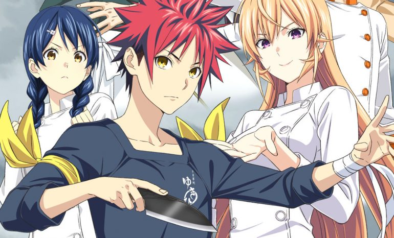

Animes Populares 2020
de
del
:
:
Aqui en esta página les enseñaremos los Animes mas vistos de este año. Aunque por desgracia, algunas producciones están sufriendo retrasos debido a la crisis sanitaria como el manga de One Piece, cuyos nuevos capítulos se han retrasado en alguna ocasión. Así que es posible que esta tendencia se vea afectada en los próximos meses.
Aun así, ahora mismo nos encontramos anime de éxito como Demon Slayer, Naruto, My Hero Academia o Ataque a los Titanes, que estrena ya su tercera temporada en Netflix. Puedes ver el listado completo a continuación en orden alfabético
TOP animes más vistos de 2020
| TOP | ANIME | DESCRIPCIÓN | IMAGEN |
|---|---|---|---|
| 1 | Atack on Titan | Conocido en castellano como Ataque a los Titanes, la serie creada por Hajime Isayama fue una auténtica revolución en Netflix y pronto se acerca su temporada final. La trama está ambientada en la Tierra después de que los humanos casi fueran exterminados por unas criaturas gigantes que parecen no tener inteligencia. Un pequeño porcentaje de la humanidad sobrevivió encerrándose en una ciudad protegida por muros extremadamente altos, incluso más altos que el mayor de los gigantes. | 2 | Black Clover | La historia creada por Yūki Tabata fue adaptada a la televisión en 2016 y desde entonces ha aumentado su popularidad progresivamente. Black Clover tiene una temática de aventuras y fantasía, donde Asta es un joven que sueña con convertirse en el mejor mago del reino. Solo tiene un problema, no puede usar magia. Afortunadamente para Asta, a los 15 años recibe el grimorio de trébol de cinco hojas increíblemente raro que le da el poder de la antimagia, así que le permite cancelar todos los efectos mágicos. |
| 3 | Boruto: Naruto next Generations | Secuela de Naruto creada por Ukyō Kodachi y Mikio Ikemoto que sigue las aventuras de Naruto Uzumaki años después de que derrotara junto a Sasuke a Kaguya, el progenitor del chakra y la mayor amenaza del mundo ninja. Naruto supervisa a una nueva generación de shinobi de la Aldea Oculta de la Hoja, sus hijos Boruto y Himawari, que no ha experimentado las mismas dificultades que sus padres. Quizás es por eso que Boruto prefiere jugar a videojuegos en vez de entrenar. Sin embargo, siente el deseo irrefrenable de derrotar a su padre, Naruto | |
| 4 | Darling in the Franxx | A pesar de contar con pocos episodios, esta serie de ciencia ficción se coló en la lista de lo más visto por su trama tan singular. En un futuro lejano, la tierra se arruina y la humanidad establece la ciudad fuerte móvil llamada Plantaciones que funciona como un refugio. Los niños y niñas son entrenados como pilotos dentro de estas Plantaciones en Mistilteinn, también conocido como la «jaula de pájaros». No saben nada del mundo exterior ni de la extensión del cielo. | |
| 5 | Demon Slayer: Kimetsu no Yaiba | Tanjiro Kamado es el protagonista de este anime dramático, adaptación del manga de Koyoharu Gotōge. El joven ha mantenido a su familia mucho tiempo, pero un buen día todos son asesinados excepto su hermana Nezuko que se convierte en un demonio. Así se hacen realidad los peores temores sobre los demonios devoradores de hombres que acechan en el bosque según los rumores. Por otra parte, se habla de la leyenda de un asesino de demonios que se dedica a cazar a estas criaturas por las noches. | |
| 6 | Dr. Stone | Una fuerza sobrenatural golpea a la Tierra convirtiendo a todo ser humano en piedra. Pasan miles de años (3700 años después de la petrificación) hasta que se despiertan las primeras personas, Taiju y Senku. Son dos estudiantes adolescentes que intentarán revertir la situación de la humanidad por todos los medios. Mientras que Senku es extremadamente inteligente, Taiju es un portento físico que estaba enamorado de una joven a la que se iba a declarar en el momento de la colisión. |  |
| 7 | Food Wars! Shokugeki no Soma | Si te gusta la cocina, este anime está hecho para ti. El padre de Soma Yukihira es dueño de un restaurante, así que su mayor aspiración es convertirse en mejor chef que su progenitor. Sin embargo, el restaurante de su padre está a punto de cerrar porque se va a trabajar a Europa, así que Soma decide entrar en la mejor academia culinaria de Japón para tomar las riendas del negocio. |  |
Puedes visitar mi otra página web sobre Criaturas Mitológicas, si te interesa este tema